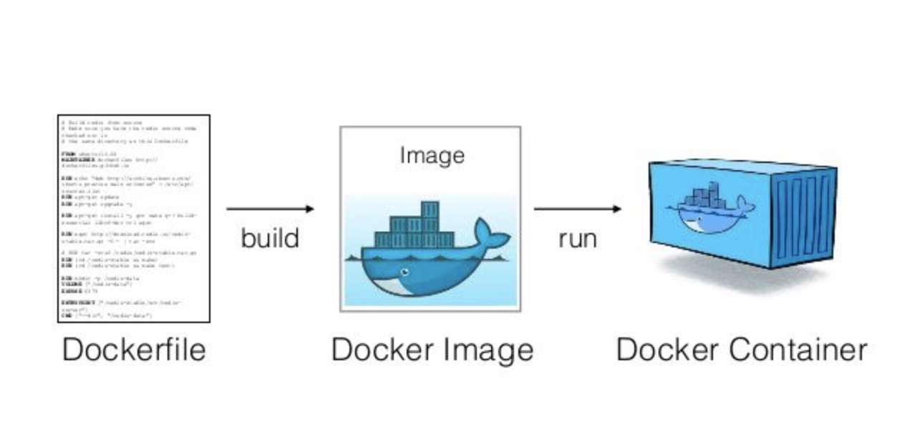

Docker
Introduction
- Docker is an open-source tool designed to make our life typically easier (although sometimes it makes it harder) when creating, building, deploying, and running software applications.
- Docker can package an application and its dependencies in a virtual container that can run on any Linux, Windows, or macOS computer.
- Our Docker containers have everything required (e.g. OS packages, Python packages) inside to run certain applications/code.
Concepts
Docker image
- A Docker image is a read-only template with instructions for creating a Docker container
- Typically instructions include information about which packages and their versions to install, e.g. list of python packages and their corresponding versions
- All steps needed to create the image and run it are defined in a Dockerfile,
e.g.
dev_tools/devops/docker_build/dev.Dockerfile
Docker container
- A Docker container is a runnable instance of an image. One can run code inside a docker container having all requirements installed.
Docker registry
- A Docker registry stores docker images. In other words, Docker registry for docker images is like GitHub for code.
High level philosophy
- We always want to separate things that don't need to run together in different
containers (e.g.,
dev / prod cmamp,optimizer,im,oms,dev_tools), along a logic of "independently runnable / deployable directories". - The problem is that when we put too many dependencies in a single container,
trying to simplify the release approach we start having huge containers that
are difficult to deploy and are unstable in terms of building even using
poetry. - Each dir that can be "deployed" and run should have a
devopsdir to build / qa / release containers with all the needed dependencies - Certain containers that need to be widely available to the team and deployed go through the release process and ECR
- Other containers that are lightweight and used only by one person (e.g., the
infracontainer) can be built on the fly usingdocker compose/docker build.
Thin client
- To bootstrap the system we use a "thin client" which installs in a virtual env
the minimum set of packages to run (e.g., installs
invoke,docker, etc). - TODO(gp): Audit / make sure we can simplify the thin env
amp / cmamp container
- The
devversion is used to develop - The
prodversion can be used for deployment as shortcut to creating a smaller container with only the strictly needed dependencies
Prod container
- In order to avoid shipping the monster cmamp dev / prod container, we want to start building smaller containers with only the dependencies that specific prod scripts need
Infra container
- To run infra script, if we only need
boto3andmoto, we can - Create a Python library
- Create a script interface
- Create an
invoketask that callsi docker_cmd --cmd ...reusing the cmamp container, (since that container already hasboto3andmotothat are dependencies we can't remove)- This approach is similar to calling the
linter
- This approach is similar to calling the
- If we think we need to add new packages only for running infra scripts then
we will create a new
infracontainer. -
We can build on the fly and not release through ECR
-
We can start with approach 1, which will also allow us to transition to 2 transparently, if needed
Relevant bugs
- https://github.com/cryptokaizen/cmamp/issues/1060
- Tool to extract the dependency from a project #1038
- Create tool for poetry debugging #1026
- Fix tests that fail due to pandas update and release cmamp image #1002
Poetry
- Poetry is a tool for managing Python packages and dependencies:
- List packages you want to install with some constraints, e.g.,
pandasmust be above 1.0 indevops/docker_build/pyproject.toml - Given a list of packages you need to install to get the desired environment,
you want
poetryto "optimize" the packages and generatedevops/docker_build/poetry.lock, which contains the list of versions of the packages to install - If there is a new version of a package re-running
poetrymight give you an updated list of packages to install
Build a Docker image
General
- A docker image is built from a
Dockerfile. The image is then used to run a Docker container.

- There is
/devopsdir under a project's dir that contains Docker-related files, e.g.cmamp/devops.
Dockerfile
- A
Dockerfileis a text document that contains all the commands to call on the command line to assemble an image. E.g.cmamp/devops/docker_build/dev.Dockerfile.
Base image
- A
Dockerfileshould start with specifying a base image. - Base image is an image that a new image is built from. A new Docker image will have all the packages/dependencies that are installed in the base image.
- Use
FROMstatement to specify a base image, e.g.FROM ubuntu:20.4
Copy files
- Copy files that are required to build a Docker image to the Docker filesystem.
- To copy a file from
/source_dir(your filesystem) to/dst_dir(Docker filesystem) do:COPY source_dir/file dst_dir - E.g., the command below will copy
install_packages.shfromdevops/docker_buildto the Docker's root directory so thatinstall_packages.shcan be accessed by Docker.COPY devops/docker_build/install_packages.sh .
Install OS packages
- Install OS packages that are needed for a Docker app, but that are not installed for a base image.
- Use
RUNinstruction to install a package, e.g.RUN apt-get install postgresql-client - Alternatively you can package all installation instructions in a
.shfile and run it. Do not forget to copy a.shfile to the Docker filesystem so that Docker can see it. E.g.,COPY devops/docker_build/install_packages.sh . RUN /bin/sh -c "./install_packages.sh"
Install Python packages
- We prefer to install Python packages with
poetry. - Make sure that there is instruction to install
pip3andpoetry. You can either put it in aDockerfileor in a separate file likeinstall_packages.sh.RUN apt-get install python3-pip RUN pip3 install poetry - Copy poetry-related files to the Docker filesystem so that files can be
accessed by Docker
COPY devops/docker_build/poetry.toml COPY devops/docker_build/poetry.lock - Update Python packages
RUN poetry install
Build an image from a Dockerfile
- To build an image from a
Dockerfilerun: ```docker build . ```
- The
Dockerfilemust be calledDockerfileand located in the root of the context. - You can point to any
Dockerfileby using-f: ```docker build -f /path_to_dockerfile/dockerfile_name ```
Run multi-container Docker application
- Compose is a tool for defining and running multi-container Docker
applications. With Compose, you use a
YAMLfile to configure your application's services.

Version
- At the beginning of a
docker-compose.yamlfile specify thedocker-composeversion. We use the version3.0, for more information see the official documents.version: "3.0"
Images
- You can either re-use a public image or build a new one from a
Dockerfile. - The
appservice below uses the image that is built from thedev.Dockerfile.app: build: context: . dockerfile: dev.Dockerfile - The
im_postgres_localservice below uses the publicpostgresimage pulled from the Docker hub registry.im_postgres_local: image: postgres: 13
Bind mount
- If you want to be able to access code inside a Docker container, you should bind-mount a directory with the code on the host.
- Mount a directory on the host inside a Docker container, e.g. mount current
directory to
/appdir inside a Docker container: ``` app: volumes:- .:/app ```
Environment variables
- You can either use variables directly from the environment or pass them in a
docker-compose.yamlfile. - It is supposed that
POSTGRES_VERSIONis already defined in the shell.db: image: "postgres:${POSTGRES_VERSION}" - Set environment variable in a service's container
```
db:
environment:
- POSTGRES_VERSION=13 image: "postgres:${POSTGRES_VERSION}" ```
- Set environment variable with
.envfile ``` db: env_file:- ./postgres_env.env image: "postgres:${POSTGRES_VERSION}" ```
- File
postgres_env.env```cat ./postgres_env.env POSTGRES_VERSION=13 ```
Basic commands
- To check more advanced usage, please see the official documentation.
- Build, (re)create, start, and attach to containers for a service. It is
assumed that a
docker-composefile has the namedocker-compose.yamland is located in the current dir. ```docker-compose up ```
- List containers
```
docker-compose ps ```
- Stop containers created by
down. ```docker-compose down ```
How to test a package in a Docker container
> sudo /bin/bash -c "(source /venv/bin/activate; pip install yfinance)"
> python -c "import finance"
Hacky approach to patch up a container
# After install create a new version of the container
> docker commit d2916dd5f122
> 623860924167.dkr.ecr.eu-north-1.amazonaws.com/cmamp:dev_ccxtpr
# Push to the repo
> docker push 623860924167.dkr.ecr.eu-north-1.amazonaws.com/cmamp:dev_ccxtpro
# Then you can push and pull on different machines
> docker pull 623860924167.dkr.ecr.eu-north-1.amazonaws.com/cmamp:dev_ccxtpro
# To use `docker_bash` you might need to retag it to match what the system expects
> docker tag 623860924167.dkr.ecr.eu-north-1.amazonaws.com/cmamp:dev_ccxtpro
How to release a Docker image
- All the
invoketasks to run the release flow are in//amp/helpers/lib_tasks.py. - Depending on the type of changes sometimes one needs to rebuild only the
prodimage, other times one needs to rebuild also thedevimage. - E.g.,
- If you change Docker build-related things (e.g., add a Python package), you
need to rebuild the
devimage and then theprodimage from thedevimage - If you change the code for a production system, you need to create a new
prodimage - We try to use the same flow, conventions, and code for all the containers (e.g., amp, cmamp, dev_tools, opt).
Multi-architecture build
- To build multi-arch (e.g.,
x86,arm) docker image usingdocker_build_local_imagewe should use--multi-buildflag - To build for specific platforms specify the platform name:
- For
x86-linux/amd64 - For
arm-linux/arm64```i docker_build_local_image --version
--multi-build --platform ```
- For
- To build for both
armandx86architectures:> i docker_build_local_image --version <VERSION> --multi-build --platform linux/amd64,linux/arm64 - Multi-arch images are built using
docker buildxwhich do not generate any local image by default - Images are pushed to the remote registry and pulled for testing and usage
- To tag the local image as dev and push it to the target registry: e.g.,
aws_ecr.ckordockerhub.sorrentum, use> i docker_tag_push_multi_build_local_image_as_dev --version <VERSION> --target <TARGET> - Once the image has been successfully pushed to both ECR and DockerHub
registries, the subsequent step involves pushing the
devimage to GHCR registry. However, this action currently requires manual execution due to restricted access- Access to the
cryptokaizenpackages is limited. To gain access, kindly reach out to GP or Juraj - To proceed, perform a Docker login using your GitHub username and PAT
(Personal Access Token):
```bash
docker login ghcr.io -u
``` - Tag the
devimage to the GHCR namespace: ```bashdocker tag 623860924167.dkr.ecr.eu-north-1.amazonaws.com/cmamp:dev ghcr.io/cryptokaizen/cmamp:dev ```
- Push the tagged image to the GHCR registry:
```bash
docker push ghcr.io/cryptokaizen/cmamp:dev ```
- Access to the
Run the dev multi-architecture image release end-to-end
Overview
- Update the
changelog.txtfile with description of new version - Build "local" image remotely in the CK AWS ECR registry and pull once it is built
- Run the
cmampregressions using a local image - Run QA tests using a local image
- Tag the image as dev image and push it to the target Docker registries
- Tag the new
devimage to GHCR namespace and push it to GHCR registry
Pre-release check-list
Prerequisites:
- The new image is built locally
Check-list:
Make sure that the regressions are passing when being run using the local image
because we run the regressions as part of the official release flow, i.e. via
docker_release_multi_build_dev_image().
cmamp- [ ] Update the
changelog.txtfile - [ ] Fast tests
- [ ] Slow tests
- [ ] Super-slow test
- [ ] QA tests
Running regressions in the orange repository is not a part of the official
image release flow so run them separately.
orange- [ ] Update the
changelog.txtfile - [ ] Fast tests
- [ ] Slow tests
- [ ] Super-slow test
Example:
i run_fast_tests --version 1.10.0 --stage local
Where 1.10.0 is the new version of the image with stage as local.
Command to run the release flow:
> i docker_release_multi_build_dev_image --version <VERSION> --platform <PLATFORM> --target-registries <TARGET_REGISTRIES>
E.g.,
i docker_release_multi_build_dev_image --version 1.6.1 --platform linux/amd64,linux/arm64 --target-registries aws_ecr.ck,dockerhub.sorrentum
TARGET_REGISTRIES: list of target registries to push the image to.
E.g.,
aws_ecr.ck-- private CK AWS Docker registrydockerhub.sorrentum-- public Dockerhub registry
All other options are the same as for the docker_release_dev_image end-to-end
flow.
Post-release check-list
- [ ] Make an integration with the
sorrentumrepository in order to copy all the changes from thecmamprepository - [ ] Tag the new
devimage to GHCR namespace and push it to GHCR registry
Stages
- A "stage" is a step (e.g., local, dev, prod) in our release workflow of Docker images, code, or infrastructure.
- To run a Docker container in a certain stage use the
stageparameter - E.g.
i docker_bash --stage="local"creates a bash session inside the local dockerampcontainer
Local
- A
localimage is used to develop and test an update to the Docker container, e.g. after updating a package, installing a new package, etc. - Local images can only be accessed locally by a developer, i.e. the team
members can not / should not use local images. In practice
localimages are likedevimages but private to users and servers.
Dev
- A
devimage is used by our team to develop our systems (e.g., to add new functionalities to thedev_toolscode). - Typically the source code is mounted through a bind mount in Docker so that one can change the code and execute it in Docker.
- The image is tested, blessed, and released so that users and CI can use it
without worries. Once a
devimage is pushed to the docker registry it can be pulled and used by the team members.
Prod
- A
prodimage is used to run a system by final users. E.g., the linter insidedev_tools, some prod system inside Airflow. - It is self-contained (it should have no dependencies) since it has everything required to run a system installed inside it, e.g., code (e.g., the linter), Python packages.
- It is typically created from the
devimage by copying the released code inside theprodimage.
Overview of how to release an image
- The release flow consists of the following phases
- Make changes to the image
- E.g., add Python package
- Update the changelog
- Build a local image
- Run specific tests (e.g., make sure that the new packages are installed)
- Run unit tests
- Run QA tests
- Tag local image as dev image
- Push dev image to ECR
- Push the image to GHCR
- If there is also an associated prod image
- Build prod image from dev image
- Run unit / QA tests
- Push prod image to ECR
How to add a Python package to Docker image
- To add a new Python package to a Docker image you need to update
poetryfiles and release a new image: - Add a new package to
amp/devops/docker_build/pyproject.tomlfile to the[tool.poetry.dependencies]section E.g., to addpytest-timeoutdo:[tool.poetry.dependencies] ... pytest-timeout = "*" ... - In general we use the latest version of a package (
*) until the tests fail or the system stops working- If the system fails, we freeze the version of the problematic packages to a known-good version to get the tests back to green until the problem is solved. We switch back to the latest version once the problem is fixed
- If you need to put a constraint on the package version, follow the official docs, and explain in a comment why this is needed making reference to GitHub issues
- To verify that package is installed correctly one can
- Build a local image. There are two options:
- Update poetry and upgrade all packages to the latest versions
> i docker_build_local_image --version {new version} --update-poetry - Refresh the lock file (e.g., install / update / remove a single package)
without upgrading all the packages
Link to the poetry docs.
> i docker_build_local_image --version {new version} --update-poetry --refresh-only-poetry - Run a docker container based on the local image
```
i docker_bash --stage local --version {new version} ```
- Verify what package was installed with
pip show {package name}, e.g., ```pip show pytest-rerunfailures Name: pytest-rerunfailures Version: 10.2 Summary: pytest plugin to re-run tests to eliminate flaky failures ... Location: /venv/lib/python3.8/site-packages Requires: pytest, setuptools Required-by: ```
- Run regressions for the local image, i.e.
```
i run_fast_tests --stage local --version {new version} i run_slow_tests --stage local --version {new version} ```
- Update the changelog describing the new version
- Send a PR with the updated poetry files and any other change needed to make the tests pass
- Release the new image. To do so follow the
# Release a Docker image
section, use
--update-poetryflag to resolve the dependencies
How to find unused packages
- While installing Python packages we need to make sure that we do not install packages that we do not use
Import-based approach using pipreqs
How it works
- To do so we use an import-based approach provided by
pipreqs. Under the hood it uses the regex below andos.walkfor selected dir:REGEXP = [ re.compile(r'^import (.+)$'), re.compile(r'^from ((?!\.+).*?) import (?:.*)$') ]
Limitations
- Not all packages that we use are necessarily imported, e.g.
awscli,jupyter,pytest-cov, etc. ->pipreqswon't find these packages - The import name is not always equal to the package actual name, see the mapping here
Usage
- See the official docs for the advanced usage.
- Run a bash session inside a Docker container
- Install
pipreqswithsudo pip install pipreqs- We install it temporary within a Docker bash session in order to introduce another dependency
- You need to re-install
pipreqseverytime you create a new Docker bash session
- To run for a root dir do:
pipreqs . --savepath ./tmp.requirements.txt- The command above will generate
./tmp.requirements.txtwith the list of the imported packages, e.g.,amp==1.1.4 async_solipsism==0.3 beautifulsoup4==4.11.1 botocore==1.24.37 cvxopt==1.3.0 cvxpy==1.2.0 dill==0.3.4 environs==9.5.0 ... - You can grep for a package name to see where it is used, e.g.,
```
jackpy "dill" helpers/hpickle.py:108: import dill ... ```
- The command above will generate
How to build a local image
- The recipe to build a
localimage is indevops/docker_build/dev.Dockerfile. This launches various scripts to install: - OS
- Python
- Venv + Python packages
- Jupyter extensions
- Application-specific packages (e.g., for the linter)
- To build a local image run:
```
i docker_build_local_image --version 1.0.0
# Build from scratch and not incrementally.
i docker_build_local_image --version 1.0.0 --no-cache
# Update poetry package list.
i docker_build_local_image --version 1.0.0 --update-poetry
# Update poetry package list and build from scratch.
i docker_build_local_image --version 1.0.0 --update-poetry --no-cache
# See more options:
i docker_build_local_image -h ```
- Once an image is built, it is tagged as
local-${user}-${version}, e.g.,local-saggese-1.0.0``` Successfully tagged 665840871993.dkr.ecr.us-east-1.amazonaws.com/amp:local-gsaggese-1.0.9
docker image ls 665840871993.dkr.ecr.us-east-1.amazonaws.com/amp:local-gsaggese-1.0.9 REPOSITORY TAG IMAGE ID CREATED SIZE 665840871993.dkr.ecr.us-east-1.amazonaws.com/amp local-gsaggese-1.0.9 cf16e3e3d1c7 Less than a second ago 2.75GB ```
- A local image is a candidate for becoming a
devimage. ```i run_fast_tests --stage local --version 1.0.0 ```
Testing the local image
- Testing the local image
```
i docker_bash pip list | tee pip_packages.dev.txt
i docker_cmd --cmd "pip list | tee pip_packages.dev.txt"
i docker_bash --stage local --version 1.0.9 pip list | tee pip_packages.local.txt ```
- Or in one command:
```
i docker_cmd --cmd "pip list | tee pip_packages.dev.txt"; i docker_cmd --stage=local --version=1.0.9 --cmd "pip list | tee pip_packages.local.txt"
vimdiff pip_packages.dev.txt pip_packages.local.txt ```
- You can move the local image on different servers for testing by pushing it on
ECR:
```
i docker_login i docker push 665840871993.dkr.ecr.us-east-1.amazonaws.com/amp:local-gsaggese-1.1.0 ```
Pass the local image to another user for testing
-
Push the local image built by a user to ECR registry. For e.g., if the image is built by user
gsaggese```i docker_login i docker push 665840871993.dkr.ecr.us-east-1.amazonaws.com/amp:local-gsaggese-1.1.0 ```
-
From user session who wants to test: pull the local image from ECR ```
i docker pull 665840871993.dkr.ecr.us-east-1.amazonaws.com/amp:local-gsaggese-1.1.0 ```
-
Tag the local image from user
gsaggese, who built the image, aslocal-currentuser-1.1.0for usercurrentuserwho wants to test it ```i docker tag 665840871993.dkr.ecr.us-east-1.amazonaws.com/amp:local-gsaggese-1.1.0 665840871993.dkr.ecr.us-east-1.amazonaws.com/amp:local-currentuser-1.1.0 ```
-
Run any kind of test using the local image. For e.g., to run fast tests ```
i run_fast_tests --stage local --version 1.1.0 ```
-
Check something inside the container ```
i docker_bash --stage local --version 1.1.0 docker > pip freeze | grep pandas ```
- After testing and making sure the regressions are green, make sure to tag the
image built by the initial user as
devand not the one tagged for thecurrent-user - This will make sure image is tagged for both
armandx86architecture on the remote registries
Tag local image as dev
- Docker tag is just a way of referring to an image. A good analogy is how Git tags refer to a particular commit in your history.
- Basically, tagging is creating a reference from one image
(
local-saggese-1.0.0) to another (dev) - Once the
localimage is tagged asdev, yourdevimage becomes equal tolocal-saggese-1.0.0 devimage is also tagged withdev-${version}, e.g.,dev-1.0.0to preserve history and allow for quick rollback.- Locally in git repository a git tag
${repo_name}-${version}, e.g.cmamp-1.0.0is created in order to properly control sync between code and container.
Push image
- To push
devorprodimage means to send it to the docker registry. It is more like pushing a commit to the GitHub - Once an image is pushed, it can be used by the team members by running
i docker_pull - Local git tag
${repo_name}-${version}, e.g.cmamp-1.0.0, is pushed at this stage to the remote repository to allow others to properly control sync between code and container. - To be able to push an image to the ECR one should have permissions to do so
End-to-end flow for dev image
- Conceptually the flow consists of the following phases:
- Build a local image of docker
i docker_build_local_image --version 1.0.0
- Run fast tests to verify that nothing is broken
i run_fast_tests --stage local --version 1.0.0
- Run end-to-end tests by, e.g., running linter on some file
i lint --files helpers/tasks.py --stage local --version 1.0.0
- Tag
localimage asdevi docker_tag_local_image_as_dev --version 1.0.0
- Push
devimage to the docker registryi docker_push_dev_image --version 1.0.0
- The mentioned flow is executed by
Build dev imageGH action and that is a preferred way to do an image release. - For specific cases that can not be done via GH action see commands below:
```
# To run the official flow end-to-end:
i docker_release_dev_image --version 1.0.0
# To see the options:
i docker_release_dev_image -h
# Run from scratch and not incrementally:
i docker_release_dev_image --version 1.0.0 --no-cache
# Force an update to poetry to pick up new packages
i docker_release_dev_image --version 1.0.0 --update-poetry
# Skip running the QA tests
i docker_release_dev_image --version 1.0.0 --no-qa-tests
# Skip running the tests
i docker_release_dev_image --version 1.0.0 --skip-tests
# Skip end-to-end tests
i docker_release_dev_image --version 1.0.0 --no-run-end-to-end-tests ```
Build prod image
- The recipe to build a
prodimage is indev_tools/devops/docker_build/prod.Dockerfile. - The main difference between
devimage andprodimage is that- Source code is accessed through a bind mount for
devimage (so that it can be easily modified) and copied inside the image for aprodimage (since we want to package the code) - Requirements to be installed are different:
devimage requires packages to develop and run the codeprodimage requires packages only to run the code
- Source code is accessed through a bind mount for
- To build the
prodimage run: ```i docker_build_prod_image --version 1.0.0
# Check the options:
i docker_build_prod_image -h
# To build from scratch and not incrementally:
i docker_build_prod_image --version 1.0.0 --no-cache ```
- To run a command inside the prod image
```
docker run --rm -t --user $(id -u):$(id -g) --workdir=/app 665840871993.dkr.ecr.us-east-1.amazonaws.com/cmamp:prod-1.0.3 "ls -l /app" ```
- Example of a complex command:
```
docker run --rm -t --workdir=/app 665840871993.dkr.ecr.us-east-1.amazonaws.com/cmamp:prod-1.0.3 "python /app/im_v2/ccxt/data/extract/download_realtime.py --to_datetime '20211204-194432' --from_datetime '20211204-193932' --dst_dir 'test/ccxt_test' --data_type 'ohlcv' --api_keys 'API_keys.json' --universe 'v03'" ```
QA for prod image
- In dev_scripts repo test:
```
i lint --files "linters/amp_black.py" ```
- In amp repo make sure:
```
i lint -f "helpers/dbg.py" ```
End-to-end flow for prod image
- Build docker
prodimage > i docker_build_prod_image --version 1.0.0- Run all the tests to verify that nothing is broken
> i run_fast_tests --version 1.0.0 --stage prod> i run_slow_tests --version 1.0.0 --stage prod> i run_superslow_tests --version 1.0.0 --stage prod> i run_qa_tests --version 1.0.0 --stage prod- Push
prodimage to the docker registry -
> i docker_push_prod_image --version 1.0.0 -
To run the flow end-to-end do: ```
i docker_release_prod_image --version 1.0.0 ```
- Same options are available as for
i docker_release_dev_image - Check options
i docker_release_prod_image -h
Flow for both dev and prod images
- To run both flows end-to-end do:
i docker_release_all- Alternatively, one can run the release stages step-by-step.
Docker-in-docker (dind)
- It is possible to install a Docker engine inside a Docker container so that
one can run Docker container (e.g., OMS or IM) inside an isolated
ampcontainer. - The problems with this approach are:
- Dind requires to run the external container in privileged mode, which might not be possible due to security concerns
- The Docker / build cache is not shared across parent and children containers, so one needs to pull / build an image every time the outermost container is restarted
- An alternative approach is the "sibling container" approach
Sibling container approach
- Refs:
- Can I run Docker-in-Docker without using the --privileged flag - Stack Overflow
- https://jpetazzo.github.io/2015/09/03/do-not-use-docker-in-docker-for-ci/
- Often what's really needed is the ability to build / run a container from
another container (e.g., CI or unit test). This can be achieved by mounting
the Docker socket
/var/run/docker.sockto the container, so that a container can talk to Docker Engine. - This approach allows reuse of the build cache across the sibling containers.
- The downside is less isolation from the external container, e.g., spawned containers can be left hanging or can collide.
- E.g.,
`` # Rundocker ps` in a container, showing the containers running in the main containerdocker run -ti --rm \ -v /var/run/docker.sock:/var/run/docker.sock \ dindtest \ docker ps
# Start a sibling hello world container:
docker run -it --rm \ -v /var/run/docker.sock:/var/run/docker.sock \ dindtest \ docker run -ti --rm hello-world ```
Connecting to Postgres instance using sibling containers
- We can start the Docker container with Postgres as a service from outside the
container.
```
(cd oms; i oms_docker_up -s local) INFO: > cmd='/local/home/gsaggese/src/venv/amp.client_venv/bin/invoke oms_docker_up -s local' report_memory_usage=False report_cpu_usage=False docker-compose \ --file /local/home/gsaggese/src/sasm-lime4/amp/oms/devops/compose/docker-compose.yml \ --env-file /local/home/gsaggese/src/sasm-lime4/amp/oms/devops/env/local.oms_db_config.env \ up \ oms_postgres Creating compose_oms_postgres_1 ... done Attaching to compose_oms_postgres_1 oms_postgres_1 | oms_postgres_1 | PostgreSQL Database directory appears to contain a database; Skipping initialization oms_postgres_1 | oms_postgres_1 | 2022-05-19 22:57:15.659 UTC [1] LOG: starting PostgreSQL 13.5 (Debian 13.5-1.pgdg110+1) on x86_64-pc-linux-gnu, compiled by gcc (Debian 10.2.1-6) 10.2.1 20210110, 64-bit oms_postgres_1 | 2022-05-19 22:57:15.659 UTC [1] LOG: listening on IPv4 address "0.0.0.0", port 5432 oms_postgres_1 | 2022-05-19 22:57:15.659 UTC [1] LOG: listening on IPv6 address "::", port 5432 oms_postgres_1 | 2022-05-19 22:57:15.663 UTC [1] LOG: listening on Unix socket "/var/run/postgresql/.s.PGSQL.5432" oms_postgres_1 | 2022-05-19 22:57:15.670 UTC [25] LOG: database system was shut down at 2022-05-19 22:56:50 UTC oms_postgres_1 | 2022-05-19 22:57:15.674 UTC [1] LOG: database system is ready to accept connections ```
- Note that Postgres needs to be
- Start a container able to
- From inside a container I launch postgres through the /var/...
```
docker ps | grep postgres CONTAINER ID IMAGE COMMAND CREATED STATUS PORTS NAMES 83bba0818c74 postgres:13 "docker-entrypoint.s..." 6 minutes ago Up 6 minutes 0.0.0.0:5432->5432/tcp compose-oms_postgres-1 ```
- Test connection to the DB from outside the container
```
psql --host=cf-spm-dev4 --port=5432 --user aljsdalsd -d oms_postgres_db_local Password for user aljsdalsd: psql (9.5.25, server 13.5 (Debian 13.5-1.pgdg110+1)) WARNING: psql major version 9.5, server major version 13. Some psql features might not work. Type "help" for help. oms_postgres_db_local=# ```
- Test connection to the DB from inside the container
```
psql --host=cf-spm-dev4 --port=5432 --user aljsdalsd -d oms_postgres_db_local ... ```
Release flow
cmamp
- File an Issue for the release (e.g., "Add package foobar to cmamp image")
- Create the corresponding branch with
i git_create_branch -i ${issue_number} - Change the code
- Update the changelog, i.e.
//cmamp/changelog.txt - Specify what was changed
- Pick the release version accordingly
- We use semantic versioning convention
- For example for version
1.2.3:- 1 is major, 2 is minor, 3 is patch
- We keep
devandprodimage version major and minor versions in syncprodgets patches -> i.e. we go fromprod-1.1.0toprod-1.1.1upon a bug fix documented in thechangelog.txt.- In this manner, it cannot happen we have
dev-1.1.0andprod-1.2.0at any point in time, butdev-1.1.0andprod-1.1.2are perfectly fine.
- In this manner, it cannot happen we have
- Test the change using the local release flow
i docker_build_local_image -v ${version} - If a new package is added run
docker_build_local_imagewith--update-poetryoption and check in apoetry.lockfile - Make sure that the tests pass
i run_fast_slow_tests -s local -v ${version}, and that the goal of the Issue is achieved (e.g., a new package is visible, the package version has been updated) - Do a PR with the change including the updated
changelog.txt, the poetry files (both the specsdevops/docker_build/poetry.tomland the package versiondevops/docker_build/poetry.lock) - Run the release flow manually (or rely on GH Action build workflow to create
the new image)
```
# Release dev image
i docker_release_dev_image --version $version
# Pick up the new image from ECR
i docker_pull ```
- Tag and push the latest
devto GHCR registry manually - Perform a Docker login using your GitHub username and PAT (Personal Access
Token):
bash > docker login ghcr.io -u <username> - Tag the
devimage to the GHCR namespace:bash > docker tag 623860924167.dkr.ecr.eu-north-1.amazonaws.com/cmamp:dev ghcr.io/cryptokaizen/cmamp:dev -
Push the tagged image to the GHCR registry:
bash > docker push ghcr.io/cryptokaizen/cmamp:dev -
Send a message on the
all@chat telling people that a new version of theXYZcontainer has been released - Users need to do a
i docker_pullto get the new container - Users that don't update should see a message telling them that the code and container are not in sync any more, e.g.,: ```
This code is not in sync with the container: code_version='1.0.3' != container_version='amp-1.0.3'
You need to:
- merge origin/master into your branch with invoke git_merge_master
- pull the latest container with invoke docker_pull
```
dev_tools
- File an Issue for the release
- Create the corresponding branch in dev_tools
- Change the code
- Run the release flow end-to-end
```
i docker_release_dev_image --version 1.1.0 i docker_release_prod_image --version 1.1.0 ``` TODO(Vlad): Add a command to run the push to Dockerhub and add it to the single arch release flow
- Push the image to Dockerhub manually
- Login to Dockerhub with the
sorrentumaccount ```docker login --username=sorrentum ```
- Tag the dev version image as
sorrentum/dev_tools:dev```docker tag 665840871993.dkr.ecr.us-east-1.amazonaws.com/dev_tools:dev-1.1.0 sorrentum/dev_tools:dev ```
- Push the dev image to Dockerhub
```
docker push sorrentum/dev_tools:dev ```
- Tag the prod version image as
sorrentum/dev_tools:prod```docker tag 665840871993.dkr.ecr.us-east-1.amazonaws.com/dev_tools:prod sorrentum/dev_tools:prod ```
- Push the prod image to Dockerhub
```
docker push sorrentum/dev_tools:prod ```
- Push the latest
prodimage to GHCR registry manually for GH actions to use it - Perform a Docker login using your GitHub username and PAT (Personal Access
Token):
bash > docker login ghcr.io -u <username> - Tag the
prodimage to the GHCR namespace:bash > docker tag 623860924167.dkr.ecr.eu-north-1.amazonaws.com/dev_tools:prod ghcr.io/cryptokaizen/dev_tools:prod -
Push the tagged image to the GHCR registry:
bash > docker push ghcr.io/cryptokaizen/dev_tools:prod -
Update the changelog, i.e.
//dev_tools/changelog.txt - The changelog should be updated only after the image is released; otherwise the sanity checks will assert that the release's version is not higher than the latest version recorded in the changelog.
- Specify what has changed
- Pick the release version accordingly
- NB! The release version should consist of 3 digits, e.g. "1.1.0" instead of "1.1"
- We use semantic versioning convention
- For example, adding a package to the image would mean bumping up version 1.0.0 to 1.0.1
- Do a PR with the change including the updated
changelog.txt - Send a message on the
all@chat telling people that a new version of the container has been released - Users need to do
i docker_pullfromdev_tools,i docker_pull_dev_toolsfromcmamp
- Users need to make sure to pull docker after the master is up-to-date (including amp submodules)
Design release flow - discussion
TODO(gp, Vitalii): Turn this into a description of the release flow
Let's assume that we want to release dev image with version 1.2.3:
> i docker_build_local_image --tag-name 1.2.3
Initially we thought about using Git tags to mark releases points in the source
repo for dev and prod releases (but not local since local is reserved to
private use by a user).
This approach is elegant, but it has some corner cases when used with containers for multiple repos that contain Git submodules.
We decided to use an approach where a changelog.txt file contains the latest
code version
- All test tasks now also use
hversion.get_code_version()that callshgit.git_describe()to get latest tag in the repo (1.0.0 in this case)
Agree. git_describe will need to accept a dir to find the tag of the releasable dir
- When we are satisfied with local image, we run
i docker_tag_local_image_as_dev
We will still need to pass --version 1.0.0
- Invoke internally tags
local-1.0.0asdev-1.0.0, in addition todev
Both for Git tags and docker tags
- Then we run
i docker_push_dev_image
We will still need to pass --version 1.0.0
- Invoke internally pushes both
dev-1.0.0anddevimages to ECR **AND** pushes local 1.0.0 git tag to remote git repo (github)
docker_release_dev_image will do basically the same (will require tag_name).
Of course docker_release... is just a convenience wrapper running all the stages
Now let's assume we want to promote dev image to prod:
- Then we run
i docker_build_prod_image - Invoke internally checks with
hversion.get_code_version()and buildsprod-1.0.0based ondev-1.0.0, also taggingprod-1.0.0asprod - Then we run
i docker_push_prod_image - Invoke pushes
prod-1.0.0andprodtags to ECR
docker_release_prod_image will do basically the same (will require tag_name).
Q0: Is the flow ok?
- Yes
Q1: The flow is the same for dev_tools and cmamp, but to update the version
of image on which dev_tools is based -- we'll need to modify Dockerfile now.
Is that ok?
- Maybe we should just create the dev_tools from scratch using the full-blown flow instead of build on top of it
- The idea of building on top of it, was just a shortcut but it is creating more problems that what it's worth it
- Then everything looks and behaves the same
- TODO(vitalii): File a bug, if we don't have it yet
Q2: If the flow is run in the submodule, e.g. in amp dir, currently the
behaviour is not well defined. Commands will try to build cmamp image in this
case, but code version will be from dev_tools -- should we fix this?
- We are going towards the concept of "releasable dirs" (see im, optimizer). If there is a dir with devops, then that dir runs inside a container
- The "Git version" should be associated to the dir we are releasing (e.g., cmamp, im, optimizer, dev_tools)
Vitalii: If we will have monorepo with releasable dirs, then indeed git tags are
not that comfortable to use, however I could argue that when one releases im
image with version 1.0.0, he gets docker image im:dev-1.0.0 , im:prod-1.0.0,
im:dev and im:prod -- but how then one is able to find corresponding code
that was used in that image?
Perhaps instead, we could share namespace of git tags between all tags.
E.g. in git repo (github) we will have:
- Im-dev-1.0.0
- Cmamp-dev-1.0.0
- Im-prod-1.0.0
GP: Point taken. In fact the code in a releasable dir still needs code from other submodules (e.g., helpers). One approach is to put the Git hash in version.txt. The one you suggest (of tagging the entire repo) with also info on the dir makes sense.
I think the Git tags are designed to do what we want, so let's use them.
Q3: We don't need version.txt file in this flow. I will remove it, ok?
- Yes, we can remove version.txt and use a README or changelog in the releasable dir
The flow is similar to what I thought.
Some observations / questions:
INV: version becomes mandatory in the release flow
- This requires a lot of cosmetic changes to the code since now it's optional, but it's worth make the changes
We need to ensure that version can only be created going fwd.
We can do a comparison of the current version with the new version as tuples (we could use semver but it feels not needed)
- The workflows are:
- Build a local image
- Release a dev image
- Release a prod image
- Rollback an image
- We rarely move the dev / prod tag back, but rather users needs to docker pull an older image and pass --basename --stage and --version to docker{bash, cmd, jupyter}
- Then the image is fixed going forward
A releasable dir has a
- Repo_config
- Maybe we should call it component_config since now also dirs can be released
- README.md or changelog.md
- Devops
- Tasks.py (with the exposed Invoke tasks)
- Lib_tasks.py (with the custom invoke tasks)
We want to try to move to helpers/lib_tasks all the "common" code without dependencies from the specific sw components. We pass function pointers for callbacks.
What to do with:
CONTAINER_VERSION='amp-1.1.1'
BUILD_TAG='amp-1.1.1-20211114_093142-AmpTask1845_Get_docker_in_docker_to_work-47fb46513f084b8f3c9008a2e623ec05040a10e9'
QA flow
- The goal is to test that the container as a whole works
- We want to run the container as a user would do
Usually we run tests inside a container to verify that the code is correct To test the container itself right now we test outside (in the thin client)
> pytest -m qa test --image_stage dev
The problem is that now the thin client needs to have a bunch of deps (including pytest, pandas and so on) which defeats the purpose of the thin env
dev_scripts_devto/client_setup/
E.g., //amp/dev_scripts/client_setup/requirements.txt
A hack is to
vimdiff /Users/saggese/src/lemonade2/amp/dev_scripts/client_setup/requirements.txt dev_scripts_devto/client_setup/requirements.txt
> dev_scripts_devto/client_setup/build.sh
A possible solution is to use Docker-in-Docker
- In this way we don't have to pollute the thin env with a bunch of stuff
- Talk to Grisha and Vitalii
This works in dev_tools because the code for the import detector is there and we are using a dev container which binds the src dir to the container
> i lint_detect_cycles --dir-name import_check/test/Test_detect_import_cycles.test1/input/ --stage dev
In all the other repos, one needs to use the prod of dev_tools container (that's what the user would do)
Next steps:
- TODO(Sonya + Grisha): release the prod dev_toools container as it is
- TODO(Sonya + Grisha): document dev_tools, release procedure
- TODO(Sonya): pull prod dev_tools (i docker_pull_dev_tools) and test that now in cmamp the tool works
- TODO(gp): figure out the QA workflow (and improve the thin client with dind)
- To break the circular dep we release a prod-candidate
Dev_tools container
- For specific dev_tools workflows see
Optimizer container
Rationale
- The high-level goal is to move towards containerized Python scripts running in
smaller containers instead of keep adding packages to
amp/cmamp, which makes theamp/cmampcontainer bloated and risky to build - Along this design philosophy similar to microservices, we want to have a
Docker container, called
optwith a Python script that uses some packages that are not compatible withamp(specifically cvxopt, cvxpy) - This is similar to what we do for the
dev_tools, which is like a containerized Python script for the linter
Build and run a local version of opt
- You can build the container locally with:
```
cd optimizer i opt_docker_build_local_image --version 0.1.0 ```
- This process takes around 5 mins and then you should have the container
docker image ls 665840871993.dkr.ecr.us-east-1.amazonaws.com/opt:local-saggese-0.1.0 REPOSITORY TAG IMAGE ID CREATED SIZE 665840871993.dkr.ecr.us-east-1.amazonaws.com/opt local-saggese-0.1.0 bb7d60d6a7d0 7 seconds ago 1.23GB - Run the container as:
```
i opt_docker_bash --stage local --version 0.1.0 ```
- To run a Jupyter notebook in the
optcontainer:
Internals
One container per Git repo
- A simple approach is to have each deployable unit (i.e., container) corresponding to a Git repo
-
The consequence would be:
- A multiplication of repos
- No implicit sharing of code across different containers
- Some mechanism to share code (e.g.,
helpers) across repos (e.g., using bind mount) - Not playing nice with Git subrepo mechanism since Docker needs to see the entire repo
-
So the code would be organized in 4 repos: ```
- lemonade / lime
- helpers
- optimizer
- oms
- models in amp ```
- Where the dependency between containers are
- Lemonade -> amp
- Amp -> optimizer, helpers
- Optimizer -> helpers, core
Multiple containers per Git repo
- Another approach is to have
optimizeras a directory insideamp - This keeps
ampandoptimizerin a single repo - To build / run optimizer code in its container one needs to
cdin the dir - The problem then becomes how to share
helpers
Mounting only optimizer dir inside Docker
- From
devops/compose/docker-compose.yml42 volumes: 43 # Move one dir up to include the entire git repo (see AmpTask1017). 44 - ../../:/app 45 # Move one dir down to include the entire git repo (see AmpTask1017). 46 working_dir: /app - From
devops/docker_build/dev.Dockerfile - ENTRYPOINT ["devops/docker_run/entrypoint.sh"]
- The problem is that Git repo doesn't work anymore
git --version: git version 2.30.2 fatal: not a git repository (or any parent up to mount point /) Stopping at filesystem boundary (GIT_DISCOVERY_ACROSS_FILESYSTEM not set). - A work around is to inject .git in /git of the container and then point git to that ``` environment: ...
- GIT_DIR=/git
volumes: # Move one dir up to include the entire git repo (see AmpTask1017). - ../../:/app - ../../../../.git:/git - ../../../../amp/helpers:/app/helpers ```
- Git works but it gets confused with the paths
modified: .dockerignore deleted: .github/gh_requirements.txt deleted: .github/workflows/build_image.yml.DISABLED deleted: .github/workflows/fast_tests.yml deleted: .github/workflows/linter.yml.DISABLED deleted: .github/workflows/slow_tests.yml deleted: .github/workflows/superslow_tests.yml.DISABLED deleted: .gitignore
Mounting the supermodule (e.g., lime, lemonade, amp) inside Docker
- From
devops/compose/docker-compose.yml42 volumes: 43 # Move one dir up to include the entire git repo (see AmpTask1017). 44 - ../../../:/app 45 # Move one dir down to include the entire git repo (see AmpTask1017). 46 working_dir: /app/amp - From
devops/docker_build/dev.Dockerfile - ENTRYPOINT ["optimizer/devops/docker_run/entrypoint.sh"]
- This approach mounts 4 dirs up from devops/compose/docker-compose.yml, i.e., //lime
- The problem with this approach is that now repo_config.py is incorrect
i opt_docker_build_local_image --version 0.4.032 - ../../../helpers:/app/amp/optimizer/helpers 33 34 # Shared cache. This is specific of lime. 35 - /local/home/share/cache:/cache 36 37 # Mount `amp` when it is used as submodule. In this case we need to 38 # mount the super project in the container (to make git work with the 39 # supermodule) and then change dir to `amp`. 40 app: 41 extends: 42 base_app 43 volumes: 44 # Move one dir up to include the entire git repo (see AmpTask1017). 45 - ../../../../:/app 46 # Move one dir down to include the entire git repo (see AmpTask1017). 47 working_dir: /app/amp/optimizer 48 #entrypoint: /bin/bash -c "ls helpers"
Invariants
- A deployable dir is a dir under a Git repo
- It corresponds to a software component (code + library = Docker container)
- Anything that has a devops dir is "deployable"
- Each Docker container is run from its corresponding dir, e.g.,
- Amp container from the amp dir
- Amp container from the lemonade dir (this is just a shortcut since lemonade has the same deps right now as amp)
- Always mount the outermost Git repo under
/app - Set the Docker working dir as the current dir
- Each deployable dir specifies all the needed information in
repo_config.py(which is the one in the current dir) - What container to run
- What functionality is supported on different servers (e.g., privileged way)
- The
changelog.txtfile is in the deployable dir (e.g., optimizer/changelog.txt) - Each
One run the invoke commands from optimizer dir
When the Docker container starts the current dir is optimizer
helpers, core is mounted in the same dir
You can't see code outside optimizer
TODO(gp): running in amp under lemonade should use the local repo_config
Release and ECR flow
TODO(gp): Implement this
Unit testing code inside opt container
- Since we want to segregate the package dependencies in different containers,
tests that have a dependency from cvxopt /cvxpy can't be run inside the
ampcontainer but need to be run insideopt. - We want to:
- (as always) write and run unit tests for the optimizer code in isolation,
i.e., test the code in the directory
optimizerby itself - Run all the tests for the entire repo (relying on both containers
ampandoptimizerwith a single command invocation) - Be able to run tests belonging to only one of the containers to shorten the debugging cycle
- To achieve this we need to solve the 3 problems below.
Avoid compiling code depending from cvxopt when running amp
- We can't parse code (e.g., in
pytest) that includes packages that are not present in a container -
E.g.,
pytestrunning inampshould not parse code in//amp/optimizersince it contains imports that will fail -
Solution 1
-
We use the pytest mechanism
cvx = pytest.importorskip("cvxpy")which is conceptually equivalent to: ``` try: import cvxopt has_cvxopt = True except ImportError: has_cvxopt = Falseif has_cvxopt: def utils1(): cvxopt… ```
-
Solution 2
-
Test in eachfile for the existence of the needed packages and enclose the code in an
if _has_package- Pros:
- We can skip code based dynamically on a
try ... except ImportModuleto check what packages are present - Cons:
- Repeat the same piece of
try ... exceptin many places- Solution: we can factor it out in a function
- We need to enclose the code in a
if ...that screws up the indentation and makes the code weird
-
Solution 3
-
Exclude certain directories (e.g.,
//amp/optimizer) frompytest- Pros:
- We don't have to spread the
try ... exceptandif \_has_packagein the code - Cons:
- The directory is relative to the top directory
- Solution: we can use a regex to specify the dir without the full path
- Which directories are included and excluded depends on where
pytestis run- E.g., running
pytestin anampcontainer we need to skip theoptimizerdir, whilepytestin anoptimizercontainer should skip everything but theoptimizerdir
- E.g., running
-
Solution 4
- Exclude certain directories or files based on which container we are running
in
- Cons:
- We need to have a way to determine in which container we are running
- Solution: we can use the env vars we use for versioning
```
echo $AM_CONTAINER_VERSION amp-1.0.3- ```
- Solution: we can use the env vars we use for versioning
```
- Given the pros and cons, we decided to follow Solution 1 and Solution 3
Run optimizer tests in a stand-alone opt container
- To run the optimizer tests, you can create an
optcontainer and then runpytest```cd optimizer i opt_docker_bash docker> pytest . ```
- We wrap this in an invoke target like
i opt_run_fast_tests
Alternative solution
- We can use dind to run the
optcontainer inside acmampone - Cons:
- Dind complicates the system
- Dind is not supported everywhere (one needs privileged containers)
- Dind is slower since there are 2 levels of (relatively fast) virtualization
Run optimizer tests as part of running unit tests for cmamp
- We use the same mechanism as
run_fast_slow_superslow_teststo pull together different test lists
Call a Dockerized executable from a container
- From https://github.com/cryptokaizen/cmamp/issues/1357
-
We need to call something from
amptooptDocker -
Solution 1
-
Inside the code we build the command line
cmd = 'docker run -it ... '; system(cmd)- Cons:
- There is code replicated between here and the invoke task (e.g., the info about the container, ...)
-
Solution 2
-
Call the Dockerized executable using the
docker_cmdinvoke targetcmd = "invoke opt_docker_cmd -cmd '...'" system(cmd)- Pros:
- All the Docker commands go through the same interface inside invoke
- Cons
- Bash interpolation in the command
- Another level of indirection: do a system call to call
invoke,invokecalls docker, docker does the work invokeneeds to be installed inside the calling container
-
Solution 3
-
Call opt_lib_tasks.py
opt_docker_cmd(cmd, ...)- Pros
- Avoid doing a call to invoke
- Can deal with bash interpolation in Python
-
We should always use Solution 3, although in the code sometimes we use Solution 1 and 2 (but we should replace in favor of Solution 3).
- The interface to the Dockerized optimizer is in
run_optimizerin//amp/oms/call_optimizer.py - To run the examples
```
cd //lime i docker_bash pytest ./amp/oms/test/test_call_optimizer.py::Test_run_dockerized_optimizer1 ```